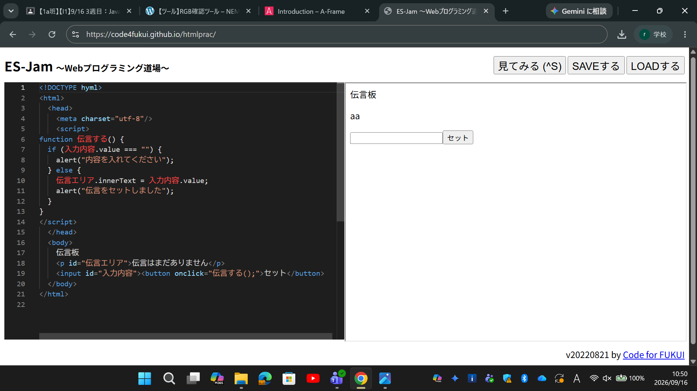

3-2 JavaScript体験：伝言プログラムを作る

伝言板
1.内容
HTMLで入力ボックスやボタンなどの画面パーツを作成し、
JavaScriptを用いてユーザーが入力した文字を
画面上に反映させる伝言板プログラムを制作した。
さらに、if文による空入力チェックを感知するシステムの作り方も学んだ。
2.感想
JavaScriptを用いることで、Webページに動的な処理や判定機能を
付加できることを体験した。
自分が入力したテキストが即座に表示される様子を確認でき、
Webアプリ制作の基礎となる仕組みへの理解が深まった。